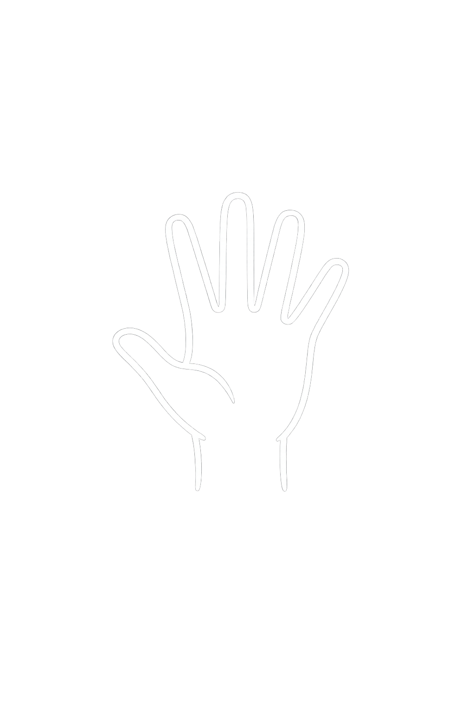

Your body has carried you through every hard day.
Let your breath nourish every cell.
4-7-8 Breathing
4 · 7 · 8 counts

Open your palm
Inhale slowly · 4 counts

Close your fist
Hold · 7 counts
Open your palm
Exhale slowly · 8 counts
4-7-8 breathing activates the parasympathetic nervous system, reducing tension and anchoring the body in the present moment.
Your breath belongs to everything.
Let go of control, become one.
Intuitive Breathing
Free-form · Follow your body

Open your palm
Inhale, no count, just feel

Close your fist
Hold, let the stillness settle
Open your palm
Exhale, release everything
No rhythm. No rules. Simply breathe as your body asks, surrendering to the natural wisdom already within you.